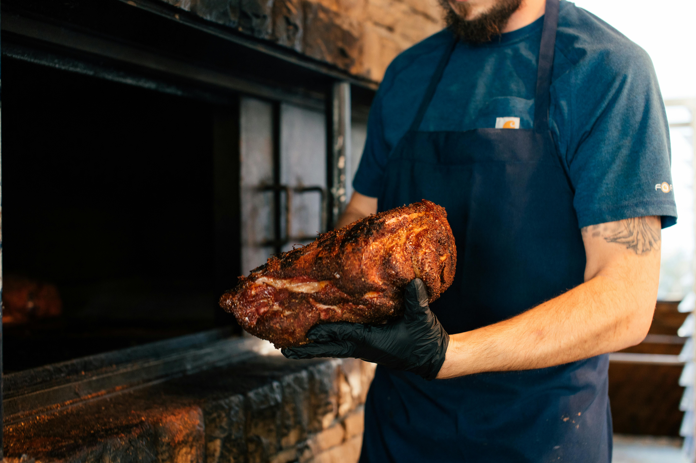

Pulled Pork
Home

Description
This smoked pulled pork is tender, juicy, and full of deep, smoky flavor. The pork shoulder is first soaked in a cider brine, which adds subtle sweetness and helps lock in moisture. After brining, it’s coated in a rich brown sugar BBQ rub that forms a flavorful crust as it slowly smokes. The result is perfectly seasoned, fall-apart pork that’s delicious on its own or piled high on sandwiches.
Ingredients
- Pork shoulder is perfect for pulled pork because it’s inexpensive, forgiving to work with, and tends to have a lot of marbling (which means it’ll result in tender meat). An 8-pound pork shoulder roast should make about 20 servings.
- Apple cider: A straightforward cider brine infuses the pork with rich flavor, ensuring it stays tender and juicy
- Sugar: Use a blend of white and brown sugars for the rub
- Seasonings: The sweet and savory rub is flavored with kosher salt, paprika, onion powder, ground black pepper, and garlic powder.
- Hickory chips: You’ll need three cups of soaked hickory chips for your smoker.
- Onion: An onion gives the pork even more bold flavor as it smokes
Directions
- Brine the pork shoulder.
- Pour the brine into the water pan of the preheated smoker with wood chips.
- Add the onion and ¼ cup of the rub
- Season the pork with the remaining rub.
- Smoke the pork until tender.
- Let rest before shredding.